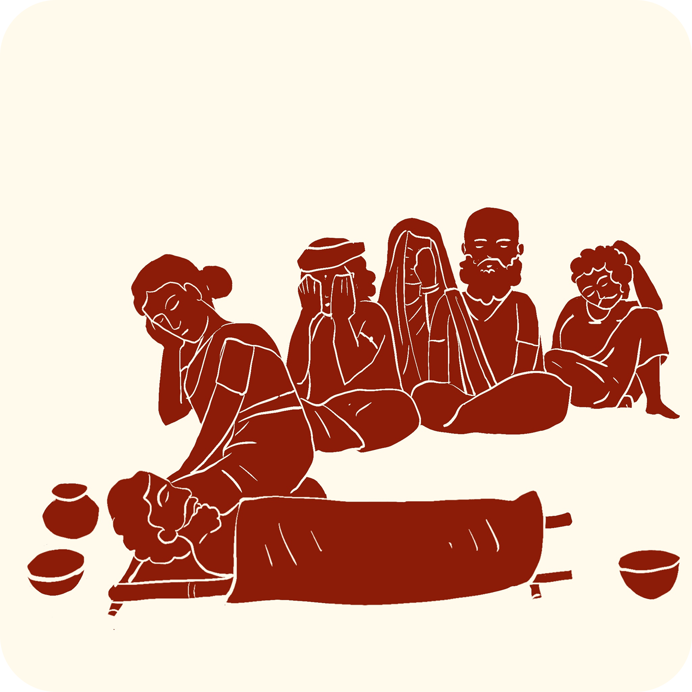

 ಈ ವಸ್ತುವಿನ ಬಗ್ಗೆ ಒಂದು ಕಥೆಯನ್ನು ಕೇಳಿ
ಈ ವಸ್ತುವಿನ ಬಗ್ಗೆ ಒಂದು ಕಥೆಯನ್ನು ಕೇಳಿಜೀವನದ ಪವಿತ್ರ ವೃತ್ತ
ಒಬ್ಬ ವ್ಯಕ್ತಿ ಸತ್ತಾಗ, ಅಂತ್ಯಕ್ರಿಯೆಯ ಸಮಾರಂಭಗಳಿಗೆ ಮೊದಲು ಅವರ ದೇಹಕ್ಕೆ ಅಂತಿಮ ಧಾರ್ಮಿಕ ಸ್ನಾನ ಮಾಡಲಾಗುತ್ತಿತ್ತು. ನವಜಾತ ಶಿಶುವನ್ನು ತೆಂಗಿನ ಚಿಪ್ಪಿನಿಂದ ಸುರಿದ ನೀರಿನಿಂದ ಸ್ನಾನ ಮಾಡಿದಂತೆ, ಅದೇ ಮೂರು ಕಣ್ಣುಗಳ ತೆಂಗಿನ ಚಿಪ್ಪಿನಿಂದ ಮೃತ ವ್ಯಕ್ತಿಯ ಮೇಲೆ ನೀರನ್ನು ಸುರಿಯಲಾಗುತ್ತಿತ್ತು. ಆ ವ್ಯಕ್ತಿ ಜನಿಸಿದಾಗ ಅದೇ ಸೌಮ್ಯತೆಯಿಂದ ಅವರನ್ನು ನೋಡಿಕೊಳ್ಳಲಾಗುತ್ತಿದೆ ಎಂದು ಅದು ತೋರಿಸಿತು.
ಅಂತ್ಯಕ್ರಿಯೆಯ ಆಚರಣೆಗಳ ಸಮಯದಲ್ಲಿ, ಸಮಾರಂಭದ ಭಾಗವಾಗಿ ತೆಂಗಿನಕಾಯಿಗಳನ್ನು ಒಡೆಯಲಾಗುತ್ತಿತ್ತು. ತೆಂಗಿನಕಾಯಿ ಒಡೆಯುವುದು ಆಧ್ಯಾತ್ಮಿಕ ಅರ್ಥವನ್ನು ಹೊಂದಿತ್ತು:
- ಇದು ವ್ಯಕ್ತಿಯ ಐಹಿಕ ಜೀವನಕ್ಕೆ ಇರುವ ಸಂಪರ್ಕವನ್ನು ಮುರಿಯುವುದನ್ನು ಪ್ರತಿನಿಧಿಸುತ್ತದೆ
- ಆತ್ಮವು ಶಾಂತಿಯುತವಾಗಿ ಮುಂದುವರಿಯಲು ಸಹಾಯ ಮಾಡುವ ಅರ್ಪಣೆಯಾಗಿತ್ತು
- ಇದು ಮರಣ ಹೊಂದಿದ ವ್ಯಕ್ತಿಯನ್ನು ಗೌರವಿಸಿತು
ಅಂತಿಮ ಆಚರಣೆಗಳ ಸಮಯದಲ್ಲಿ ಗೌರವಿಸುವ ಸಂಕೇತವಾಗಿದೆ:
- ಅರಿಶಿನ ಮತ್ತು ಶಿಕಾಕಾಯಿಯನ್ನು ದೇಹದ ವಿವಿಧ ಭಾಗಗಳಿಗೆ ಹಚ್ಚಲಾಗುತ್ತಿತ್ತು
- ಒಡೆದ ತೆಂಗಿನಕಾಯಿಯನ್ನು ವ್ಯಕ್ತಿಯ ಬಳಿ ಇಡಲಾಗುತ್ತಿತ್ತು
- ದೀಪಗಳನ್ನು ಬೆಳಗಿಸಲಾಗುತ್ತಿತ್ತು
- ಅಂತಿಮ ಸ್ನಾನಕ್ಕಾಗಿ ನೀರನ್ನು ಸುರಿಯಲು ತೆಂಗಿನ ಚಿಪ್ಪನ್ನು ಬಳಸಲಾಗುತ್ತಿತ್ತು